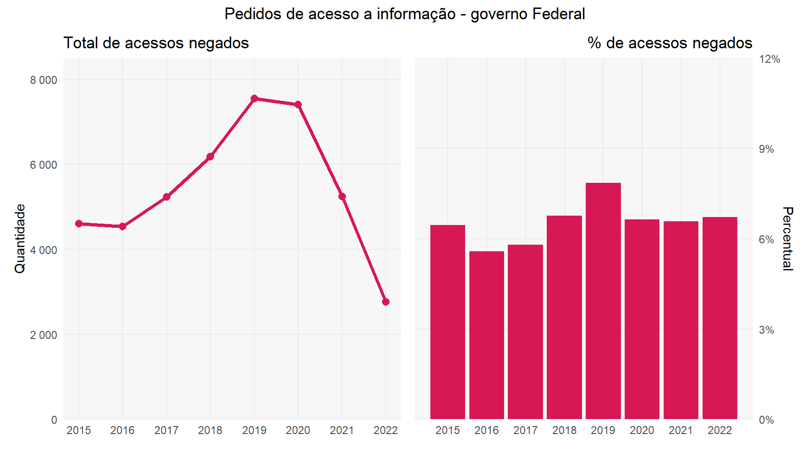
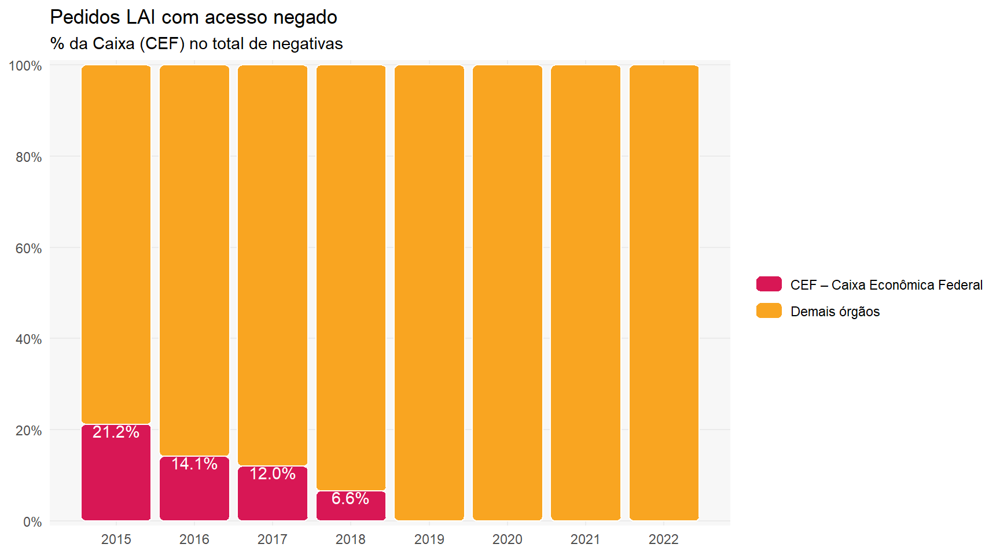
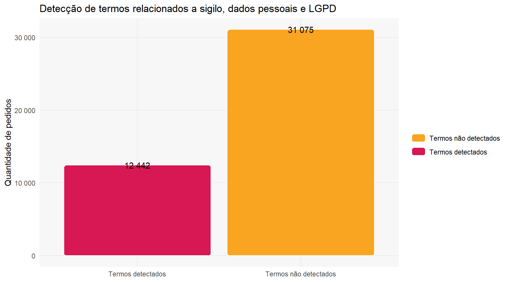
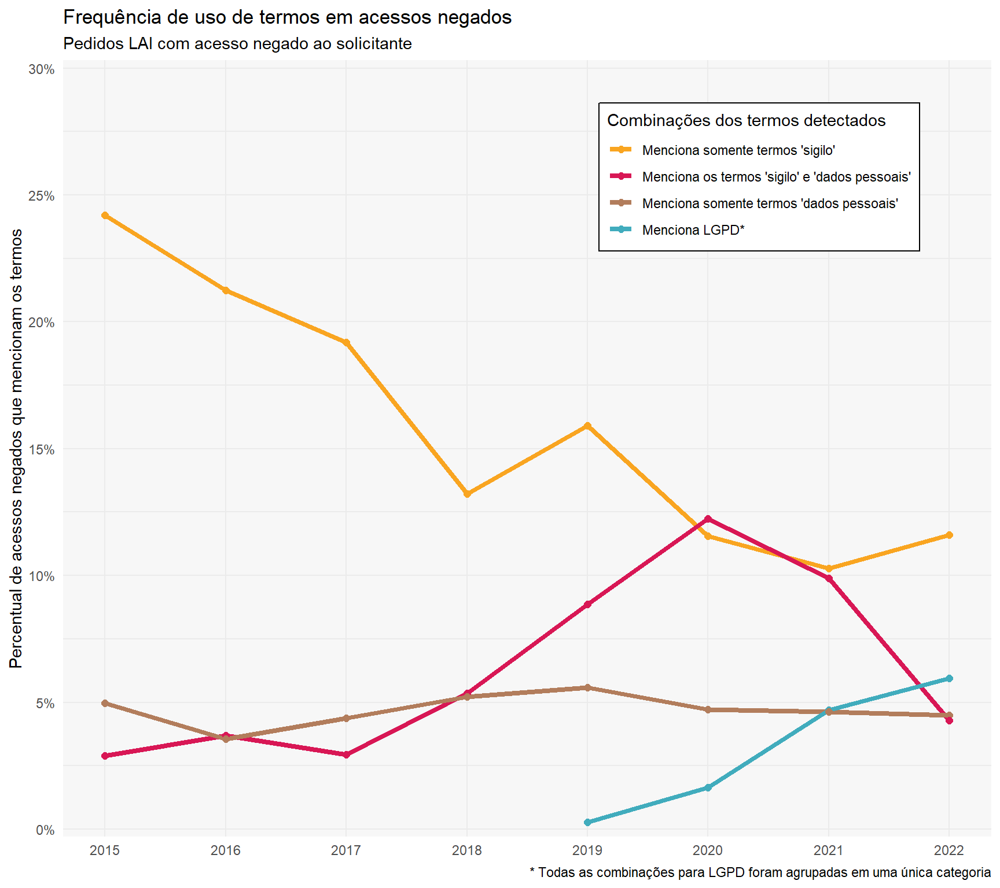
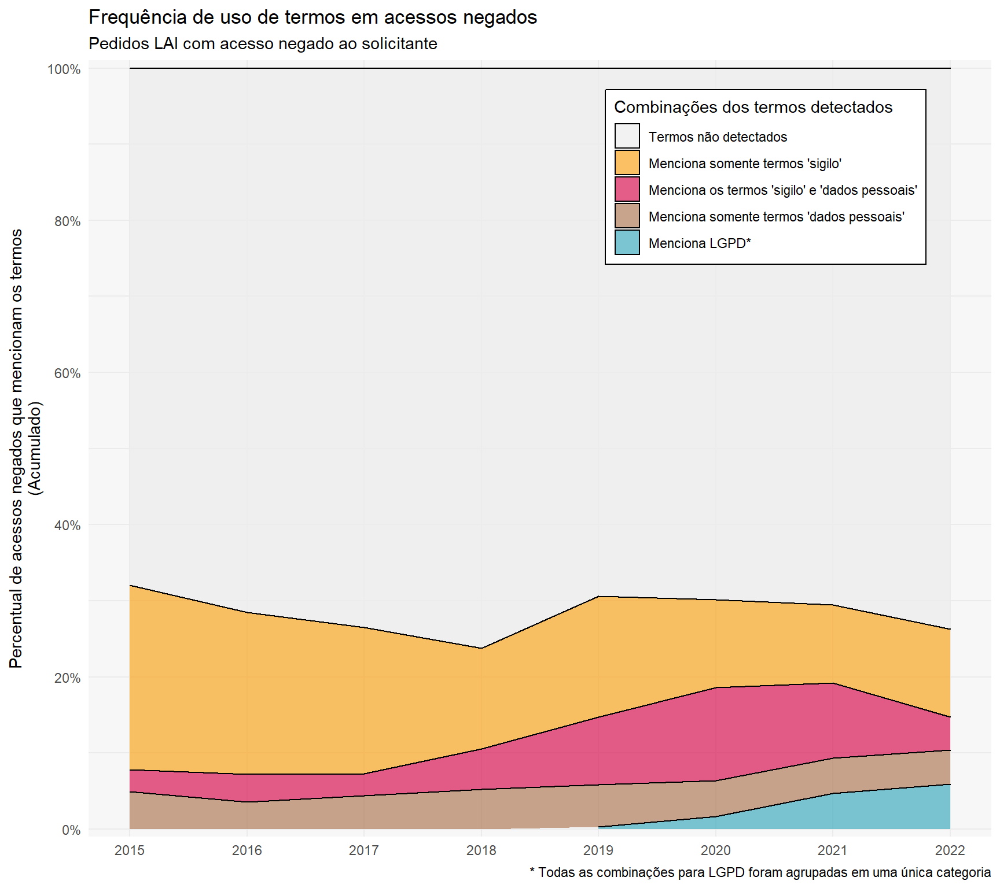

library(tidyverse)#> ── Attaching packages ─────────────────────────────────────── tidyverse 1.3.1 ──#> ✔ ggplot2 3.3.6 ✔ purrr 0.3.4#> ✔ tibble 3.1.8 ✔ dplyr 1.0.9#> ✔ tidyr 1.2.0 ✔ stringr 1.4.0#> ✔ readr 2.1.2 ✔ forcats 0.5.1#> Warning: package 'tibble' was built under R version 4.2.1#> ── Conflicts ────────────────────────────────────────── tidyverse_conflicts() ──#> ✖ dplyr::filter() masks stats::filter()#> ✖ dplyr::lag() masks stats::lag()library(here)#> here() starts at C:/Users/rauld/Documents/monitoramento-lailibrary(lubridate)#> #> Attaching package: 'lubridate'#> The following objects are masked from 'package:base':#> #> date, intersect, setdiff, unionlibrary(patchwork)source(here("src/0-plot-aesthetics.R"), encoding ="utf-8")#> You will likely need to install these fonts on your system as well.#> #> You can find them in [C:/Users/rauld/AppData/Local/R/win-library/4.2/hrbrthemes/fonts/roboto-condensed]
Base de dados - visão geral
Foram analisados os Pedidos de Acesso a Informação (pedidos LAI) enviados aos órgãos do Governo Federal e disponibilizados pelo portal FalaBr. Foram selecionados para análise somente as respostas aos pedidos LAI onde o órgão negou acesso ao solicitante (decisao = "Acesso Negado"), totalizando 43.517 respostas analisadas.
Código
base <-readRDS(here("data/base-cgu-filtrada.rds"))ids_acesso_negado <- base %>%filter(base =="Pedidos") %>%select(datasets) %>%unnest(datasets) %>%filter(decisao =="Acesso Negado") %>%pull(id_pedido)nr_protocolo <- base %>%filter(base =="Pedidos") %>%select(datasets) %>%unnest(datasets) %>%filter(decisao =="Acesso Negado") %>%select(id_pedido, protocolo)pedidos <-readRDS(here("data/pedidos-clean.rds"))recursos <-readRDS(here("data/recursos-clean.rds"))
Código
decisao_agregada <- base %>%filter(base =="Pedidos") %>%select(datasets) %>%unnest(datasets) %>%mutate(decisao =if_else( decisao %in%c("Acesso Concedido", "Acesso Parcialmente Concedido", "Acesso Negado"), decisao, "Outra classificação*" )) %>%count(ano =year(data_registro), decisao) %>%mutate(decisao =reorder(decisao, n))p1 <- decisao_agregada %>%filter(decisao =="Acesso Negado") %>%ggplot(aes(x = ano, y = n)) +geom_line(size =1.3, color = cores_aep[["rosa"]], show.legend = F) +geom_point(size =2.5, color = cores_aep[["rosa"]], show.legend = F) +labs(x =NULL,y ="Quantidade",title ="Total de acessos negados" ) +scale_y_continuous(labels = scales::number, expand =c(0, 0), limits =c(0, 8.5e3)) +scale_x_continuous(breaks = 2015L:2022L)p2 <- decisao_agregada %>%add_count(ano, wt = n, name ="n_ano") %>%mutate(perc = n / n_ano) %>%filter(decisao =="Acesso Negado") %>%ggplot(aes(x = ano, y = perc)) +geom_col(size =1.3, fill = cores_aep[["rosa"]]) +labs(x =NULL,y ="Percentual",title ="% de acessos negados" ) +scale_y_continuous(labels = scales::percent, expand =c(0, 0), limits =c(0, .12),position ="right") +scale_x_continuous(breaks = 2015L:2022L) +theme(plot.title =element_text(hjust =1))p1 + p2 +plot_layout(guides ='collect') +plot_annotation(title ="Pedidos de acesso a informação - governo Federal", theme =theme(plot.title =element_text(hjust = .5)))

Termos pesquisados nas respostas
Foram analisados os conteúdos das respostas dos pedidos selecionados, identificando quais deles mencionam alguma combinação dos termos abaixo:
Termos “sigilo”.
Termos “dados pessoais”, “informações pessoais”, “Art. 31 da LAI”.
Termos “LGPD”, referente á Lei Geral de Proteção de Dados.
Código
termos <- pedidos %>%filter(id_pedido %in% ids_acesso_negado) %>% tidylog::left_join(nr_protocolo) %>%transmute(id_pedido = id_pedido,protocolo = protocolo,data_registro = data_registro,data_resposta = data_resposta,orgao = orgao,detalhamento = detalhamento_clean,resposta_pedido = resposta_clean,resumo = resumo_clean,menciona_lai_pedido =str_detect(detalhamento_clean, "LAI"),menciona_lai_resposta =str_detect(resposta_clean, "LAI"),menciona_dados_pessoais_pedido =str_detect(detalhamento_clean, "dados_pessoais|informacoes pessoais|informacao pessoal|art 31|artigo 31"),menciona_dados_pessoais_resposta =str_detect(resposta_clean, "dados_pessoais|informacoes pessoais|informacao pessoal|art 31|artigo 31"),menciona_lgpd_pedido =str_detect(detalhamento_clean, "LGPD"),menciona_lgpd_resposta =str_detect(resposta_clean, "LGPD"),menciona_sigilo_pedido =str_detect(detalhamento_clean, "sigilo"),menciona_sigilo_resposta =str_detect(resposta_clean, "sigilo"),# menciona_artigo_31_pedido = str_detect(detalhamento_clean, "(artigo 31|art 31)"),# menciona_artigo_31_resposta = str_detect(resposta_clean, "(artigo 31|art 31)") )#> Joining, by = "id_pedido"#> left_join: added one column (protocolo)#> Warning in prettyNum(r, big.mark = big.mark, big.interval = big.interval, :#> 'big.mark' and 'decimal.mark' are both ',', which could be confusing#> Warning in prettyNum(r, big.mark = big.mark, big.interval = big.interval, :#> 'big.mark' and 'decimal.mark' are both ',', which could be confusing#> Warning in prettyNum(r, big.mark = big.mark, big.interval = big.interval, :#> 'big.mark' and 'decimal.mark' are both ',', which could be confusing#> Warning in prettyNum(r, big.mark = big.mark, big.interval = big.interval, :#> 'big.mark' and 'decimal.mark' are both ',', which could be confusing#> > rows only in x 0#> > rows only in y ( 0)#> > matched rows 43,517#> > ========#> > rows total 43,517termos_categoria <- termos %>%transmute( id_pedido, protocolo, data_registro, orgao,detectado =case_when( (#1 menciona_lai_resposta &!menciona_sigilo_resposta &!menciona_dados_pessoais_resposta &!menciona_lgpd_resposta ) ~"Termos não detectados", (#2!menciona_lai_resposta &!menciona_sigilo_resposta &!menciona_dados_pessoais_resposta &!menciona_lgpd_resposta ) ~"Termos não detectados", (#3 menciona_lai_resposta & menciona_sigilo_resposta &!menciona_dados_pessoais_resposta &!menciona_lgpd_resposta ) ~"Menciona somente termos 'sigilo'", (#4 menciona_lai_resposta & menciona_sigilo_resposta & menciona_dados_pessoais_resposta &!menciona_lgpd_resposta ) ~"Menciona os termos 'sigilo' e 'dados pessoais'", (#5 menciona_lai_resposta &!menciona_sigilo_resposta & menciona_dados_pessoais_resposta &!menciona_lgpd_resposta ) ~"Menciona somente termos 'dados pessoais'", (#6!menciona_lai_resposta & menciona_sigilo_resposta &!menciona_dados_pessoais_resposta &!menciona_lgpd_resposta ) ~"Menciona somente termos 'sigilo'", (#7!menciona_lai_resposta &!menciona_sigilo_resposta & menciona_dados_pessoais_resposta &!menciona_lgpd_resposta ) ~"Menciona somente termos 'dados pessoais'", (#8!menciona_lai_resposta & menciona_sigilo_resposta & menciona_dados_pessoais_resposta &!menciona_lgpd_resposta ) ~"Menciona os termos 'sigilo' e 'dados pessoais'", (#9 menciona_lai_resposta &!menciona_sigilo_resposta & menciona_dados_pessoais_resposta & menciona_lgpd_resposta ) ~"Menciona os termos 'dados pessoais' e 'LGPD'", (#10 menciona_lai_resposta & menciona_sigilo_resposta & menciona_dados_pessoais_resposta & menciona_lgpd_resposta ) ~"Menciona os termos 'sigilo', 'dados pessoais' e 'LGPD'", (#11!menciona_lai_resposta &!menciona_sigilo_resposta & menciona_dados_pessoais_resposta & menciona_lgpd_resposta ) ~"Menciona os termos 'dados pessoais' e 'LGPD'", (#12 menciona_lai_resposta &!menciona_sigilo_resposta &!menciona_dados_pessoais_resposta & menciona_lgpd_resposta ) ~"Menciona somente termos 'LGPD'", (#13!menciona_lai_resposta &!menciona_sigilo_resposta &!menciona_dados_pessoais_resposta & menciona_lgpd_resposta ) ~"Menciona somente termos 'LGPD'", (#14 menciona_lai_resposta & menciona_sigilo_resposta &!menciona_dados_pessoais_resposta & menciona_lgpd_resposta ) ~"Menciona os termos 'sigilo' e 'LGPD'", (#15!menciona_lai_resposta & menciona_sigilo_resposta & menciona_dados_pessoais_resposta & menciona_lgpd_resposta ) ~"Menciona os termos 'sigilo', 'dados pessoais' e 'LGPD'", (#16!menciona_lai_resposta & menciona_sigilo_resposta &!menciona_dados_pessoais_resposta & menciona_lgpd_resposta ) ~"Menciona os termos 'sigilo' e 'LGPD'",TRUE~NA_character_ ))termos %>%select(ends_with("_resposta"), -data_resposta) %>%count( menciona_lai_resposta, menciona_sigilo_resposta, menciona_dados_pessoais_resposta, menciona_lgpd_resposta,sort =TRUE ) %>%mutate(ord =row_number()) %>%group_by(ord) %>%nest() %>%deframe() %>%map( pivot_longer,cols =c(menciona_lai_resposta, menciona_sigilo_resposta, menciona_dados_pessoais_resposta, menciona_lgpd_resposta),names_to ="termo",values_to ="detectado" )#> $`1`#> # A tibble: 4 × 3#> n termo detectado#> <int> <chr> <lgl> #> 1 16890 menciona_lai_resposta TRUE #> 2 16890 menciona_sigilo_resposta FALSE #> 3 16890 menciona_dados_pessoais_resposta FALSE #> 4 16890 menciona_lgpd_resposta FALSE #> #> $`2`#> # A tibble: 4 × 3#> n termo detectado#> <int> <chr> <lgl> #> 1 14185 menciona_lai_resposta FALSE #> 2 14185 menciona_sigilo_resposta FALSE #> 3 14185 menciona_dados_pessoais_resposta FALSE #> 4 14185 menciona_lgpd_resposta FALSE #> #> $`3`#> # A tibble: 4 × 3#> n termo detectado#> <int> <chr> <lgl> #> 1 5167 menciona_lai_resposta TRUE #> 2 5167 menciona_sigilo_resposta TRUE #> 3 5167 menciona_dados_pessoais_resposta FALSE #> 4 5167 menciona_lgpd_resposta FALSE #> #> $`4`#> # A tibble: 4 × 3#> n termo detectado#> <int> <chr> <lgl> #> 1 2693 menciona_lai_resposta TRUE #> 2 2693 menciona_sigilo_resposta TRUE #> 3 2693 menciona_dados_pessoais_resposta TRUE #> 4 2693 menciona_lgpd_resposta FALSE #> #> $`5`#> # A tibble: 4 × 3#> n termo detectado#> <int> <chr> <lgl> #> 1 1683 menciona_lai_resposta TRUE #> 2 1683 menciona_sigilo_resposta FALSE #> 3 1683 menciona_dados_pessoais_resposta TRUE #> 4 1683 menciona_lgpd_resposta FALSE #> #> $`6`#> # A tibble: 4 × 3#> n termo detectado#> <int> <chr> <lgl> #> 1 1647 menciona_lai_resposta FALSE #> 2 1647 menciona_sigilo_resposta TRUE #> 3 1647 menciona_dados_pessoais_resposta FALSE #> 4 1647 menciona_lgpd_resposta FALSE #> #> $`7`#> # A tibble: 4 × 3#> n termo detectado#> <int> <chr> <lgl> #> 1 396 menciona_lai_resposta FALSE #> 2 396 menciona_sigilo_resposta FALSE #> 3 396 menciona_dados_pessoais_resposta TRUE #> 4 396 menciona_lgpd_resposta FALSE #> #> $`8`#> # A tibble: 4 × 3#> n termo detectado#> <int> <chr> <lgl> #> 1 305 menciona_lai_resposta FALSE #> 2 305 menciona_sigilo_resposta TRUE #> 3 305 menciona_dados_pessoais_resposta TRUE #> 4 305 menciona_lgpd_resposta FALSE #> #> $`9`#> # A tibble: 4 × 3#> n termo detectado#> <int> <chr> <lgl> #> 1 202 menciona_lai_resposta TRUE #> 2 202 menciona_sigilo_resposta FALSE #> 3 202 menciona_dados_pessoais_resposta TRUE #> 4 202 menciona_lgpd_resposta TRUE #> #> $`10`#> # A tibble: 4 × 3#> n termo detectado#> <int> <chr> <lgl> #> 1 186 menciona_lai_resposta TRUE #> 2 186 menciona_sigilo_resposta TRUE #> 3 186 menciona_dados_pessoais_resposta TRUE #> 4 186 menciona_lgpd_resposta TRUE #> #> $`11`#> # A tibble: 4 × 3#> n termo detectado#> <int> <chr> <lgl> #> 1 54 menciona_lai_resposta FALSE #> 2 54 menciona_sigilo_resposta FALSE #> 3 54 menciona_dados_pessoais_resposta TRUE #> 4 54 menciona_lgpd_resposta TRUE #> #> $`12`#> # A tibble: 4 × 3#> n termo detectado#> <int> <chr> <lgl> #> 1 44 menciona_lai_resposta TRUE #> 2 44 menciona_sigilo_resposta FALSE #> 3 44 menciona_dados_pessoais_resposta FALSE #> 4 44 menciona_lgpd_resposta TRUE #> #> $`13`#> # A tibble: 4 × 3#> n termo detectado#> <int> <chr> <lgl> #> 1 32 menciona_lai_resposta FALSE #> 2 32 menciona_sigilo_resposta FALSE #> 3 32 menciona_dados_pessoais_resposta FALSE #> 4 32 menciona_lgpd_resposta TRUE #> #> $`14`#> # A tibble: 4 × 3#> n termo detectado#> <int> <chr> <lgl> #> 1 15 menciona_lai_resposta TRUE #> 2 15 menciona_sigilo_resposta TRUE #> 3 15 menciona_dados_pessoais_resposta FALSE #> 4 15 menciona_lgpd_resposta TRUE #> #> $`15`#> # A tibble: 4 × 3#> n termo detectado#> <int> <chr> <lgl> #> 1 14 menciona_lai_resposta FALSE #> 2 14 menciona_sigilo_resposta TRUE #> 3 14 menciona_dados_pessoais_resposta TRUE #> 4 14 menciona_lgpd_resposta TRUE #> #> $`16`#> # A tibble: 4 × 3#> n termo detectado#> <int> <chr> <lgl> #> 1 4 menciona_lai_resposta FALSE #> 2 4 menciona_sigilo_resposta TRUE #> 3 4 menciona_dados_pessoais_resposta FALSE #> 4 4 menciona_lgpd_resposta TRUE
A base de dados da CGU não é completa, pois os pedidos contendo dados pessoais e informações consideradas sensíveis são descartados e o seu conteúdo não é divulgado. Os critérios para descarte desses pedidos da transparência ativa é adotado pelos órgãos do governo Federal e pela CGU e não é claro. Tal incompletude dos dados resulta em subnotificação das detecções dos termos, uma vez que eles dizem respeito aos temas “sigilo” e “dados pessoais”.
Outra fonte de subnotificação importante é a ausência de dados da Caixa Econômica Federal (CEF). A CEF era um dos principais órgãos solicitados via LAI sendo responsável por pelo menos x% de todas as solicitações disponibilizadas pelo FalaBr entre 2015 e 2018.
Código
base[1, 2] %>%unnest(datasets) %>%inner_join(nr_protocolo) %>%count(ano =year(data_registro),orgao =if_else(orgao =="CEF – Caixa Econômica Federal", orgao, "Demais órgãos") ) %>%add_count(ano, wt = n, name ="n_total") %>%mutate(perc = n / n_total) %>%ggplot(aes(x = ano, y = perc, fill = orgao)) + ggchicklet::geom_chicklet() +geom_text(aes(label =if_else(orgao =="Demais órgãos",NA_character_, scales::percent(perc,accuracy = .1,decimal_mark =",",big.mark =" "))),color ="white",vjust =1 ) +scale_fill_manual(values =c("CEF – Caixa Econômica Federal"= cores_aep[["rosa"]],"Demais órgãos"= cores_aep[["laranja"]] ) ) + hrbrthemes::scale_y_percent(limits =c(0, 1), n.breaks =6) +labs(title ="Pedidos LAI com acesso negado",x =NULL, y =NULL,subtitle ="% da Caixa (CEF) no total de negativas",fill =NULL ) +scale_x_continuous(breaks = 2015L:2022L)#> Joining, by = c("id_pedido", "protocolo")#> Warning: Removed 8 rows containing missing values (geom_text).

A busca pelos termos não é perfeita e pode conter imprecisões e detecções que não correspondem ao contexto de interesse. Para aumentar a precisão da detecção o conteúdo das respostas foram normalizados com remoção de acentos, pontuações, caracteres especiais e substituição de letras maiúsculas por minúsculas. A detecção dos termos foi feita com o auxílio de expressões regulares definidas neste script.
A quantidade de pedidos em que os termos foram detectados podem ser vistos na figura abaixo:
Código
termos_categoria %>%mutate(detectado =if_else(detectado =="Termos não detectados", detectado, "Termos detectados")) %>%count(detectado, sort = T) %>%ggplot(aes(x = detectado, y = n, fill = detectado)) + ggchicklet::geom_chicklet() +geom_text(aes(label = scales::number(n))) +scale_y_continuous(labels = scales::number) +scale_fill_manual(values =c("Termos não detectados"= cores_aep[["laranja"]],"Termos detectados"= cores_aep[["rosa"]])) +labs(title ="Detecção de termos relacionados a sigilo, dados pessoais e LGPD",y ="Quantidade de pedidos",x =NULL,fill =NULL )

Onde os termos foram detectados, foram agrupadas as combinações de sua utilização:
labs(x =NULL,y ="Quantidade",title ="Combinações dos termos detectados",subtitle ="Pedidos LAI com acesso negado ao solicitante" )#> $x#> NULL#> #> $y#> [1] "Quantidade"#> #> $title#> [1] "Combinações dos termos detectados"#> #> $subtitle#> [1] "Pedidos LAI com acesso negado ao solicitante"#> #> attr(,"class")#> [1] "labels"
A figura abaixo apresenta o percentual de acessos negados que mencionaram as combinações de textos.
Código
termos_categoria %>%mutate(detectado =if_else(str_detect(detectado, "LGPD"), "Menciona LGPD*", detectado)) %>%count(ano =year(data_registro), detectado, sort = T) %>%add_count(ano, wt = n, name ="n_total") %>%mutate(perc = n / n_total) %>%filter(detectado !="Termos não detectados") %>%ggplot(aes(x = ano, y = perc, color =reorder(detectado, -perc))) +geom_line(size =1.5) +geom_point(size =2) +theme(legend.position =c(.75, .85),panel.grid.minor.y =element_line(),legend.background =element_rect(fill ="white")) + hrbrthemes::scale_y_percent(limits =c(0, .3), n.breaks =6) +scale_x_continuous(breaks = 2015L:2022L) +scale_color_manual(values =c("Menciona somente termos 'sigilo'"= cores_aep[["laranja"]],"Menciona os termos 'sigilo' e 'dados pessoais'"= cores_aep[["rosa"]],"Menciona somente termos 'dados pessoais'"= cores_aep[["marrom"]],"Menciona LGPD*"= cores_tb[["azul"]] )) +labs(x =NULL,y ="Percentual de acessos negados que mencionam os termos",color ="Combinações dos termos detectados",title ="Frequência de uso de termos em acessos negados",subtitle ="Pedidos LAI com acesso negado ao solicitante",caption ="* Todas as combinações para LGPD foram agrupadas em uma única categoria" )

Em linhas gerais, a distribuição da frequência de negativas que alegam sigilos ou exposição de informações sensíveis e pessoais não se alteraram ao longo dos anos. Entretanto isso deve ser visto com ressalvas, uma vez que a Caixa Econômica Federal não disponibiliza pedidos LAI em transparência ativa. Nos últimos anos aumentaram a frequência da utilização de termos relacionados a dados pessoais e, mais recentemente, a Lei Geral de Proteção de Dados.
Código
termos_categoria %>%mutate(detectado =if_else(str_detect(detectado, "LGPD"), "Menciona LGPD*", detectado)) %>%count(ano =year(data_registro), detectado, sort = T) %>%add_count(ano, wt = n, name ="n_total") %>%mutate(perc = n / n_total) %>%ggplot(aes(x = ano, y = perc, fill =reorder(detectado, -perc))) +geom_area(position ="stack", color ="black", alpha = .7) +theme(legend.position =c(.75, .85),panel.grid.minor.y =element_line(),legend.background =element_rect(fill ="white")) + hrbrthemes::scale_y_percent(limits =c(0, 1), n.breaks =6) +scale_x_continuous(breaks = 2015L:2022L) +scale_fill_manual(values =c("Termos não detectados"= cores_tb[["cinza_quase_branco"]],"Menciona somente termos 'sigilo'"= cores_aep[["laranja"]],"Menciona os termos 'sigilo' e 'dados pessoais'"= cores_aep[["rosa"]],"Menciona somente termos 'dados pessoais'"= cores_aep[["marrom"]],"Menciona LGPD*"= cores_tb[["azul"]] )) +labs(x =NULL,y ="Percentual de acessos negados que mencionam os termos\n(Acumulado)",fill ="Combinações dos termos detectados",title ="Frequência de uso de termos em acessos negados",subtitle ="Pedidos LAI com acesso negado ao solicitante",caption ="* Todas as combinações para LGPD foram agrupadas em uma única categoria" )

Relação de pedidos que utilizaram o texto (link para planilhas)
Clique aqui para acessar a relação de pedidos LAI com as negativas de acesso a informação.
Código fonte
---title: "Acessos negados contendo termos relacionados a 'sigilo' e 'artigo 31 da LAI'"lang: pt-BRformat: html: anchor-sections: true code-fold: true code-tools: true code-link: true code-line-numbers: true code-summary: "Código" toc: true toc-title: "Índice" toc-depth: 4 footnotes-hover: true smooth-scroll: true fig-width: 9 search: true comments: hypothesis: trueknitr: opts_chunk: collapse: true comment: "#>" editor_options: chunk_output_type: consoleexecute: cache: false---```{=html}<style>.nav-tabs .nav-link { margin-bottom: -1px; background: none; border: 1px solid transparent; border-top-left-radius: .25rem; border-top-right-radius: .25rem; color: #fcaa27; font-size: 0.875em;}.nav-tabs .nav-link.active, .nav-tabs .nav-item.show .nav-link { color: #495057; background-color: #fff; border-color: #dee2e6 #dee2e6 #fff; color: #d81755; font-size: 1em;}</style>``````{r}#| label: libslibrary(tidyverse)library(here)library(lubridate)library(patchwork)source(here("src/0-plot-aesthetics.R"), encoding ="utf-8")```## Base de dados - visão geralForam analisados os Pedidos de Acesso a Informação (pedidos LAI) enviados aos órgãos do Governo Federal e disponibilizados pelo portal [FalaBr](http://www.consultaesic.cgu.gov.br/busca/_layouts/15/DownloadPedidos/DownloadDados.aspx). Foram selecionados para análise somente as respostas aos pedidos LAI onde o órgão negou acesso ao solicitante (`decisao = "Acesso Negado"`), totalizando 43.517 respostas analisadas.```{r}#| label: bases-de-dadosbase <-readRDS(here("data/base-cgu-filtrada.rds"))ids_acesso_negado <- base %>%filter(base =="Pedidos") %>%select(datasets) %>%unnest(datasets) %>%filter(decisao =="Acesso Negado") %>%pull(id_pedido)nr_protocolo <- base %>%filter(base =="Pedidos") %>%select(datasets) %>%unnest(datasets) %>%filter(decisao =="Acesso Negado") %>%select(id_pedido, protocolo)pedidos <-readRDS(here("data/pedidos-clean.rds"))recursos <-readRDS(here("data/recursos-clean.rds"))``````{r}#| label: numeros-da-lai-2decisao_agregada <- base %>%filter(base =="Pedidos") %>%select(datasets) %>%unnest(datasets) %>%mutate(decisao =if_else( decisao %in%c("Acesso Concedido", "Acesso Parcialmente Concedido", "Acesso Negado"), decisao, "Outra classificação*" )) %>%count(ano =year(data_registro), decisao) %>%mutate(decisao =reorder(decisao, n))p1 <- decisao_agregada %>%filter(decisao =="Acesso Negado") %>%ggplot(aes(x = ano, y = n)) +geom_line(size =1.3, color = cores_aep[["rosa"]], show.legend = F) +geom_point(size =2.5, color = cores_aep[["rosa"]], show.legend = F) +labs(x =NULL,y ="Quantidade",title ="Total de acessos negados" ) +scale_y_continuous(labels = scales::number, expand =c(0, 0), limits =c(0, 8.5e3)) +scale_x_continuous(breaks = 2015L:2022L)p2 <- decisao_agregada %>%add_count(ano, wt = n, name ="n_ano") %>%mutate(perc = n / n_ano) %>%filter(decisao =="Acesso Negado") %>%ggplot(aes(x = ano, y = perc)) +geom_col(size =1.3, fill = cores_aep[["rosa"]]) +labs(x =NULL,y ="Percentual",title ="% de acessos negados" ) +scale_y_continuous(labels = scales::percent, expand =c(0, 0), limits =c(0, .12),position ="right") +scale_x_continuous(breaks = 2015L:2022L) +theme(plot.title =element_text(hjust =1))p1 + p2 +plot_layout(guides ='collect') +plot_annotation(title ="Pedidos de acesso a informação - governo Federal", theme =theme(plot.title =element_text(hjust = .5)))```## Termos pesquisados nas respostasForam analisados os conteúdos das respostas dos pedidos selecionados, identificando quais deles mencionam alguma combinação dos termos abaixo:* Termos "sigilo".* Termos "dados pessoais", "informações pessoais", "Art. 31 da LAI".* Termos "LGPD", referente á Lei Geral de Proteção de Dados.```{r}#| label: identificando-termostermos <- pedidos %>%filter(id_pedido %in% ids_acesso_negado) %>% tidylog::left_join(nr_protocolo) %>%transmute(id_pedido = id_pedido,protocolo = protocolo,data_registro = data_registro,data_resposta = data_resposta,orgao = orgao,detalhamento = detalhamento_clean,resposta_pedido = resposta_clean,resumo = resumo_clean,menciona_lai_pedido =str_detect(detalhamento_clean, "LAI"),menciona_lai_resposta =str_detect(resposta_clean, "LAI"),menciona_dados_pessoais_pedido =str_detect(detalhamento_clean, "dados_pessoais|informacoes pessoais|informacao pessoal|art 31|artigo 31"),menciona_dados_pessoais_resposta =str_detect(resposta_clean, "dados_pessoais|informacoes pessoais|informacao pessoal|art 31|artigo 31"),menciona_lgpd_pedido =str_detect(detalhamento_clean, "LGPD"),menciona_lgpd_resposta =str_detect(resposta_clean, "LGPD"),menciona_sigilo_pedido =str_detect(detalhamento_clean, "sigilo"),menciona_sigilo_resposta =str_detect(resposta_clean, "sigilo"),# menciona_artigo_31_pedido = str_detect(detalhamento_clean, "(artigo 31|art 31)"),# menciona_artigo_31_resposta = str_detect(resposta_clean, "(artigo 31|art 31)") )termos_categoria <- termos %>%transmute( id_pedido, protocolo, data_registro, orgao,detectado =case_when( (#1 menciona_lai_resposta &!menciona_sigilo_resposta &!menciona_dados_pessoais_resposta &!menciona_lgpd_resposta ) ~"Termos não detectados", (#2!menciona_lai_resposta &!menciona_sigilo_resposta &!menciona_dados_pessoais_resposta &!menciona_lgpd_resposta ) ~"Termos não detectados", (#3 menciona_lai_resposta & menciona_sigilo_resposta &!menciona_dados_pessoais_resposta &!menciona_lgpd_resposta ) ~"Menciona somente termos 'sigilo'", (#4 menciona_lai_resposta & menciona_sigilo_resposta & menciona_dados_pessoais_resposta &!menciona_lgpd_resposta ) ~"Menciona os termos 'sigilo' e 'dados pessoais'", (#5 menciona_lai_resposta &!menciona_sigilo_resposta & menciona_dados_pessoais_resposta &!menciona_lgpd_resposta ) ~"Menciona somente termos 'dados pessoais'", (#6!menciona_lai_resposta & menciona_sigilo_resposta &!menciona_dados_pessoais_resposta &!menciona_lgpd_resposta ) ~"Menciona somente termos 'sigilo'", (#7!menciona_lai_resposta &!menciona_sigilo_resposta & menciona_dados_pessoais_resposta &!menciona_lgpd_resposta ) ~"Menciona somente termos 'dados pessoais'", (#8!menciona_lai_resposta & menciona_sigilo_resposta & menciona_dados_pessoais_resposta &!menciona_lgpd_resposta ) ~"Menciona os termos 'sigilo' e 'dados pessoais'", (#9 menciona_lai_resposta &!menciona_sigilo_resposta & menciona_dados_pessoais_resposta & menciona_lgpd_resposta ) ~"Menciona os termos 'dados pessoais' e 'LGPD'", (#10 menciona_lai_resposta & menciona_sigilo_resposta & menciona_dados_pessoais_resposta & menciona_lgpd_resposta ) ~"Menciona os termos 'sigilo', 'dados pessoais' e 'LGPD'", (#11!menciona_lai_resposta &!menciona_sigilo_resposta & menciona_dados_pessoais_resposta & menciona_lgpd_resposta ) ~"Menciona os termos 'dados pessoais' e 'LGPD'", (#12 menciona_lai_resposta &!menciona_sigilo_resposta &!menciona_dados_pessoais_resposta & menciona_lgpd_resposta ) ~"Menciona somente termos 'LGPD'", (#13!menciona_lai_resposta &!menciona_sigilo_resposta &!menciona_dados_pessoais_resposta & menciona_lgpd_resposta ) ~"Menciona somente termos 'LGPD'", (#14 menciona_lai_resposta & menciona_sigilo_resposta &!menciona_dados_pessoais_resposta & menciona_lgpd_resposta ) ~"Menciona os termos 'sigilo' e 'LGPD'", (#15!menciona_lai_resposta & menciona_sigilo_resposta & menciona_dados_pessoais_resposta & menciona_lgpd_resposta ) ~"Menciona os termos 'sigilo', 'dados pessoais' e 'LGPD'", (#16!menciona_lai_resposta & menciona_sigilo_resposta &!menciona_dados_pessoais_resposta & menciona_lgpd_resposta ) ~"Menciona os termos 'sigilo' e 'LGPD'",TRUE~NA_character_ ))termos %>%select(ends_with("_resposta"), -data_resposta) %>%count( menciona_lai_resposta, menciona_sigilo_resposta, menciona_dados_pessoais_resposta, menciona_lgpd_resposta,sort =TRUE ) %>%mutate(ord =row_number()) %>%group_by(ord) %>%nest() %>%deframe() %>%map( pivot_longer,cols =c(menciona_lai_resposta, menciona_sigilo_resposta, menciona_dados_pessoais_resposta, menciona_lgpd_resposta),names_to ="termo",values_to ="detectado" )```A base de dados da CGU não é completa, pois os pedidos contendo dados pessoais e informações consideradas sensíveis são descartados e o seu conteúdo não é divulgado. Os critérios para descarte desses pedidos da transparência ativa é adotado pelos órgãos do governo Federal e pela CGU e não é claro. Tal incompletude dos dados **resulta em subnotificação** das detecções dos termos, uma vez que eles dizem respeito aos temas "sigilo" e "dados pessoais".Outra fonte de subnotificação importante é a ausência de dados da Caixa Econômica Federal (CEF). A CEF era um dos principais órgãos solicitados via LAI sendo responsável por pelo menos x% de todas as solicitações disponibilizadas pelo FalaBr entre 2015 e 2018.```{r}#| label: plot-cefbase[1, 2] %>%unnest(datasets) %>%inner_join(nr_protocolo) %>%count(ano =year(data_registro),orgao =if_else(orgao =="CEF – Caixa Econômica Federal", orgao, "Demais órgãos") ) %>%add_count(ano, wt = n, name ="n_total") %>%mutate(perc = n / n_total) %>%ggplot(aes(x = ano, y = perc, fill = orgao)) + ggchicklet::geom_chicklet() +geom_text(aes(label =if_else(orgao =="Demais órgãos",NA_character_, scales::percent(perc,accuracy = .1,decimal_mark =",",big.mark =" "))),color ="white",vjust =1 ) +scale_fill_manual(values =c("CEF – Caixa Econômica Federal"= cores_aep[["rosa"]],"Demais órgãos"= cores_aep[["laranja"]] ) ) + hrbrthemes::scale_y_percent(limits =c(0, 1), n.breaks =6) +labs(title ="Pedidos LAI com acesso negado",x =NULL, y =NULL,subtitle ="% da Caixa (CEF) no total de negativas",fill =NULL ) +scale_x_continuous(breaks = 2015L:2022L)```A busca pelos termos não é perfeita e pode conter imprecisões e detecções que não correspondem ao contexto de interesse. Para aumentar a precisão da detecção o conteúdo das respostas foram normalizados com remoção de acentos, pontuações, caracteres especiais e substituição de letras maiúsculas por minúsculas. A detecção dos termos foi feita com o auxílio de expressões regulares definidas [neste script](src/4-lista-de-regex.R).A quantidade de pedidos em que os termos foram detectados podem ser vistos na figura abaixo:```{r}#| label: plot-deteccao-de-termos-geraltermos_categoria %>%mutate(detectado =if_else(detectado =="Termos não detectados", detectado, "Termos detectados")) %>%count(detectado, sort = T) %>%ggplot(aes(x = detectado, y = n, fill = detectado)) + ggchicklet::geom_chicklet() +geom_text(aes(label = scales::number(n))) +scale_y_continuous(labels = scales::number) +scale_fill_manual(values =c("Termos não detectados"= cores_aep[["laranja"]],"Termos detectados"= cores_aep[["rosa"]])) +labs(title ="Detecção de termos relacionados a sigilo, dados pessoais e LGPD",y ="Quantidade de pedidos",x =NULL,fill =NULL )```Onde os termos foram detectados, foram agrupadas as combinações de sua utilização:```{r}#| label: plot-deteccao-de-termos-detalhado#| fig-height: 12termos_categoria %>%filter(detectado !="Termos não detectados") %>%count(ano =year(data_registro), detectado, sort = T) %>%ggplot(aes(x = ano, y = n)) + ggchicklet::geom_chicklet(fill = cores_aep[["rosa"]]) +geom_text(aes(label =if_else(n >0, scales::number(n), "")),vjust =-.6 ) +facet_wrap(~reorder(detectado, -n), ncol =1) +scale_y_continuous(labels = scales::number, limits =c(0, 1.4e3)) +scale_x_continuous(breaks = 2015L:2022L)labs(x =NULL,y ="Quantidade",title ="Combinações dos termos detectados",subtitle ="Pedidos LAI com acesso negado ao solicitante" )```A figura abaixo apresenta o percentual de acessos negados que mencionaram as combinações de textos.```{r}#| fig-width: 9#| fig-height: 8#| column: page#| label: plot-frequencia-termostermos_categoria %>%mutate(detectado =if_else(str_detect(detectado, "LGPD"), "Menciona LGPD*", detectado)) %>%count(ano =year(data_registro), detectado, sort = T) %>%add_count(ano, wt = n, name ="n_total") %>%mutate(perc = n / n_total) %>%filter(detectado !="Termos não detectados") %>%ggplot(aes(x = ano, y = perc, color =reorder(detectado, -perc))) +geom_line(size =1.5) +geom_point(size =2) +theme(legend.position =c(.75, .85),panel.grid.minor.y =element_line(),legend.background =element_rect(fill ="white")) + hrbrthemes::scale_y_percent(limits =c(0, .3), n.breaks =6) +scale_x_continuous(breaks = 2015L:2022L) +scale_color_manual(values =c("Menciona somente termos 'sigilo'"= cores_aep[["laranja"]],"Menciona os termos 'sigilo' e 'dados pessoais'"= cores_aep[["rosa"]],"Menciona somente termos 'dados pessoais'"= cores_aep[["marrom"]],"Menciona LGPD*"= cores_tb[["azul"]] )) +labs(x =NULL,y ="Percentual de acessos negados que mencionam os termos",color ="Combinações dos termos detectados",title ="Frequência de uso de termos em acessos negados",subtitle ="Pedidos LAI com acesso negado ao solicitante",caption ="* Todas as combinações para LGPD foram agrupadas em uma única categoria" )```Em linhas gerais, a distribuição da frequência de negativas que alegam sigilos ou exposição de informações sensíveis e pessoais não se alteraram ao longo dos anos. Entretanto isso deve ser visto com ressalvas, uma vez que a Caixa Econômica Federal não disponibiliza pedidos LAI em transparência ativa. Nos últimos anos aumentaram a frequência da utilização de termos relacionados a dados pessoais e, mais recentemente, a Lei Geral de Proteção de Dados.```{r}#| fig-width: 9#| fig-height: 8#| column: page#| label: plot-frequencia-termos-stackedtermos_categoria %>%mutate(detectado =if_else(str_detect(detectado, "LGPD"), "Menciona LGPD*", detectado)) %>%count(ano =year(data_registro), detectado, sort = T) %>%add_count(ano, wt = n, name ="n_total") %>%mutate(perc = n / n_total) %>%ggplot(aes(x = ano, y = perc, fill =reorder(detectado, -perc))) +geom_area(position ="stack", color ="black", alpha = .7) +theme(legend.position =c(.75, .85),panel.grid.minor.y =element_line(),legend.background =element_rect(fill ="white")) + hrbrthemes::scale_y_percent(limits =c(0, 1), n.breaks =6) +scale_x_continuous(breaks = 2015L:2022L) +scale_fill_manual(values =c("Termos não detectados"= cores_tb[["cinza_quase_branco"]],"Menciona somente termos 'sigilo'"= cores_aep[["laranja"]],"Menciona os termos 'sigilo' e 'dados pessoais'"= cores_aep[["rosa"]],"Menciona somente termos 'dados pessoais'"= cores_aep[["marrom"]],"Menciona LGPD*"= cores_tb[["azul"]] )) +labs(x =NULL,y ="Percentual de acessos negados que mencionam os termos\n(Acumulado)",fill ="Combinações dos termos detectados",title ="Frequência de uso de termos em acessos negados",subtitle ="Pedidos LAI com acesso negado ao solicitante",caption ="* Todas as combinações para LGPD foram agrupadas em uma única categoria" )```## Relação de pedidos que utilizaram o texto (link para planilhas)```{r}# plan <- base[1, 2] %>%# unnest(datasets) %>%# inner_join(termos_categoria %>% filter(detectado != "Termos não detectados")) %>%# transmute(# link = str_glue("http://www.consultaesic.cgu.gov.br/busca/_layouts/15/DetalhePedido/DetalhePedido.aspx?nup={protocolo}"),# link = str_glue('=HIPERLINK("{link}"; "LINK")'),# id_pedido = id_pedido,# protocolo = protocolo,# orgao = orgao,# combinacao_de_termo_detectada = detectado,# ano_registro = year(dmy(ts_registro)),# data_registro = dmy(ts_registro),# detalhamento = detalhamento,# data_resposta = dmy(ts_resposta),# resposta# )# # googlesheets4::write_sheet(# plan,# "https://docs.google.com/spreadsheets/d/10NSfGW-f1mt8SWZGb4UBMVnN6AcxEVRyXiJrtXc4qhw/edit#gid=0",# sheet = "Resultados"# )```[Clique aqui](https://docs.google.com/spreadsheets/d/10NSfGW-f1mt8SWZGb4UBMVnN6AcxEVRyXiJrtXc4qhw/edit#gid=0) para acessar a relação de pedidos LAI com as negativas de acesso a informação.